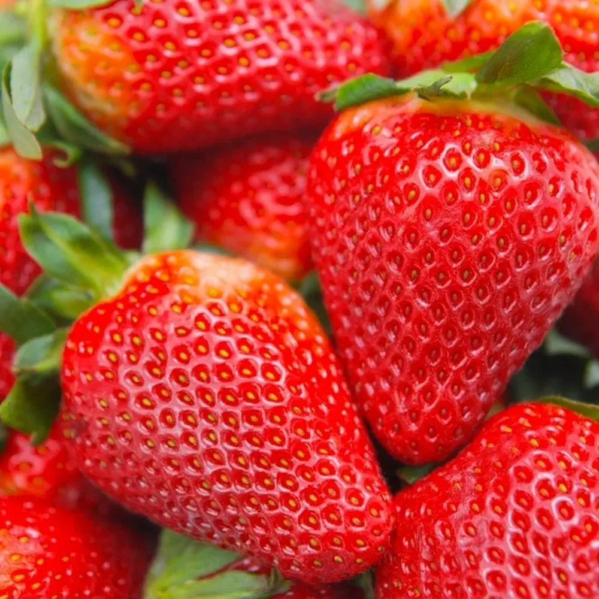
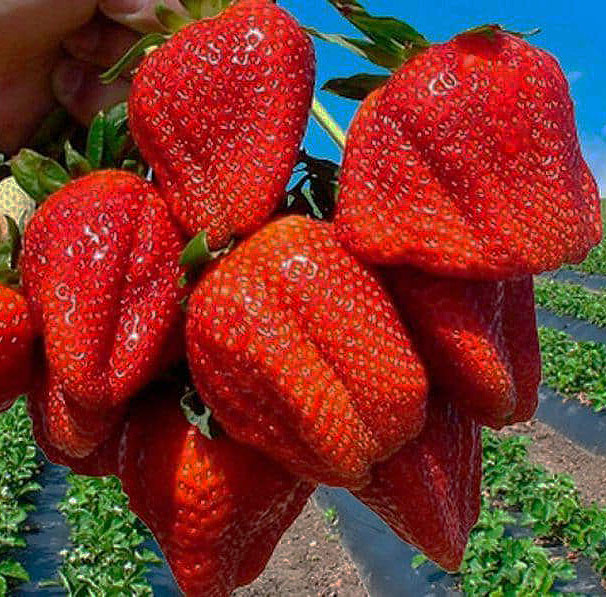
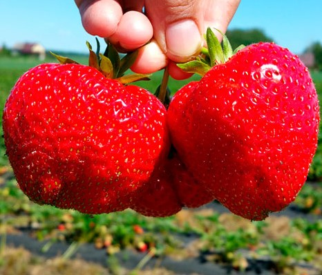
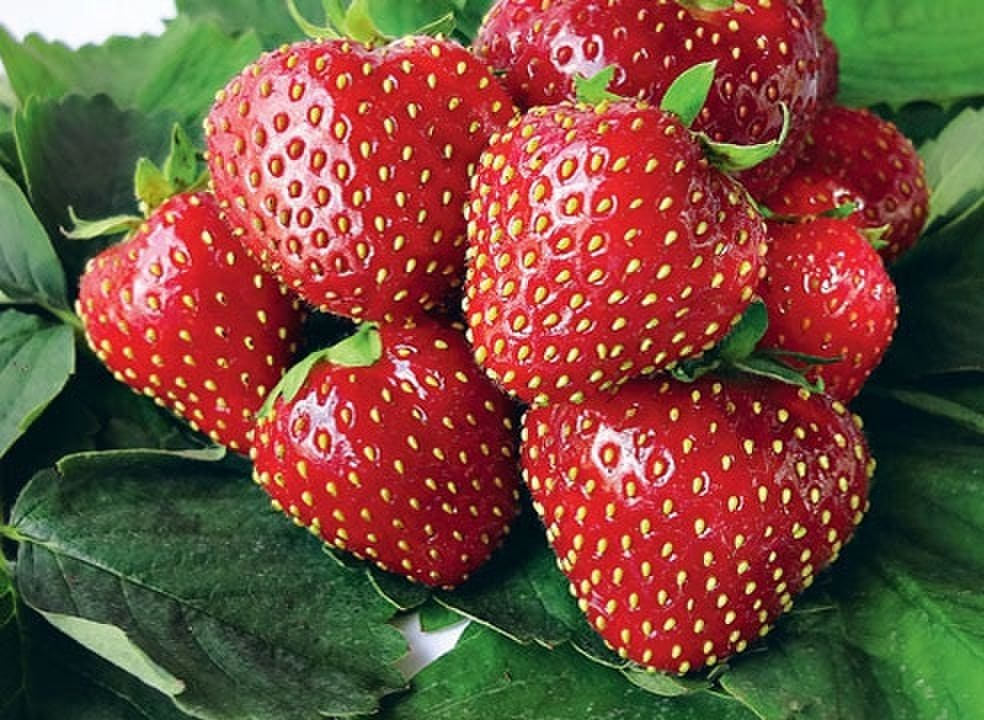
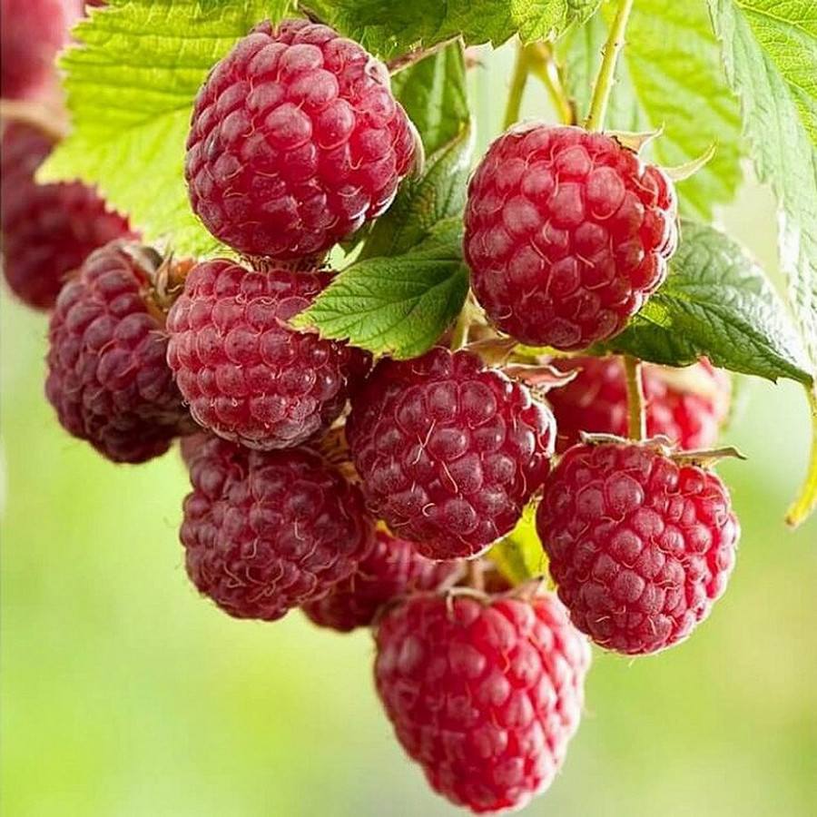
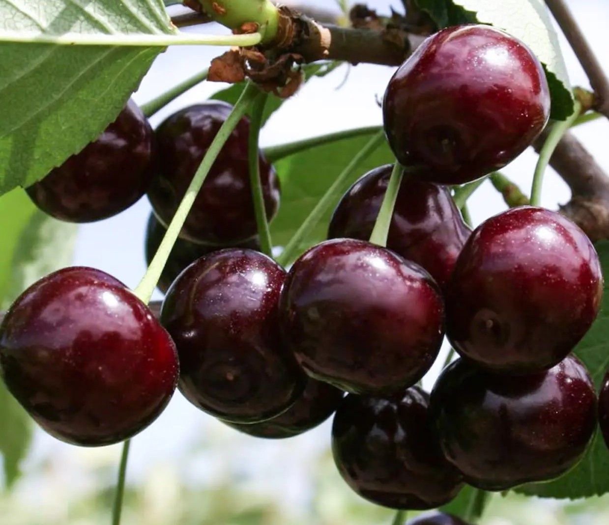

Клубника "Альба" - сорт итальянской селекции очень раннего срока созревания. Ягоды крупные 25-40 г, равномерные. Имеют коническую удлиненную форму, ярко-красный оттенок с блеском, имеют сладкий вкус с легкой кислинкой.

Азия – среднеранний сорт клубники универсального назначения. Выведен в Италии. Средняя масса ягод в составляет 30-35 грамм, в первой волне плодоношения они гораздо крупнее – 60-90 грамм, а иногда вырастают экземпляры и побольше.

Априка – перспективный итальянский сорт земляники садовой (клубники) раннего срока созревания универсального назначения использования. Был выведен в Италии. Масса ягод в среднем составляет 30-35 грамм.

Сорт клубники "Кимберли" - это очень популярный сорт. Ягоды созревают в ранние сроки, они ярко-красные, конические, блестящие, весом до 20г. Мякоть сочная, но достаточно плотная. Вкус сладкий с кислинкой и легким ароматом.

Семена «Красный Рубин» — ремонтантный сорт малины универсального назначения. Куст среднего размера, пряморослый. Листья крупные, тёмно-зелёные, морщинистые. Ягоды большие, округлые, тёмно-малиновые, массой 3‒3,5 г.

Ежевика — многолетний кустарник рода Рубус с одноименными плодами, ягодами. Сок плодов тёмно-красный, кислый со сладкими нотками.

Смородина цветет гроздьями мелких невзрачных цветков розовато-серого цвета. Ягоды кисловатые, душистые, глянцевые, черно-бурые, сочные, размером до 10 мм, образующие грозди.

Сорт получен путем отбора из сеянцев от свободного опыления сорта Жуковская. Плоды массой 5,0 г, широкосердцевидные, высота 20,9 мм, ширина 19,8 мм, толщина 17,9 мм. Воронка плода средняя, верхушка округлая. Плоды темно-красные.

Сорт получен от скрещивания Жуковской с Алмазом. Плоды высотой 18 мм и диаметром 16 мм, крупные, массой 5,0 г, одномерные, округлой формы. Вершина плода округлая, воронка мелкая, ямка средняя, основание с углублением.